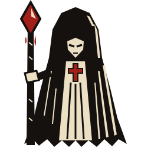
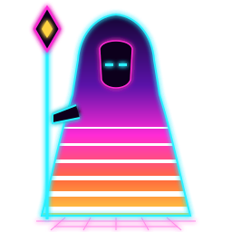
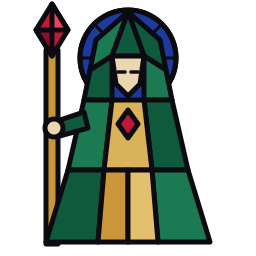
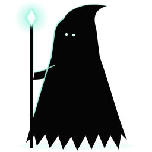
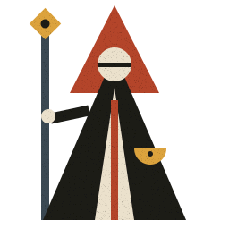
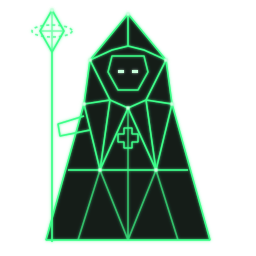
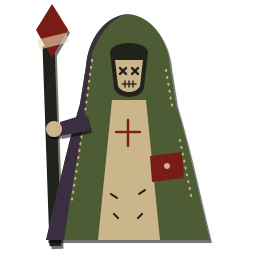

01 · Linocut
Medieval woodcut / plague pamphlet
- Two colours plus one red. Nothing else.
- Draw the shape in ink, then cut bone-coloured wedges out of it on the lit side.
- Straight jagged edges only. No curves.

02 · Neon Wraith
Synthwave necromancy
- Big shapes get the sunset gradient, sliced by horizontal bars that thicken towards the bottom.
- Every outline is a glowing neon line.
- Faces are empty voids with light-bar eyes.

03 · Stained Glass
Cathedral window saints
- Everything is flat polygons with the same thick dark stroke.
- Shade by splitting a shape into two facets of the same hue.
- Each character gets a segmented halo or rose in its own colour.

04 · Last Lantern
Limbo-style silhouette, one light
- Characters are pure black shapes; the outline does all the work.
- Each character owns one light colour: healer teal, wizard violet, assassin red, templar gold.
- Rim light only on the edges facing that light.
05 · Gilded Icon
Byzantine icon / tarot card
- Dark fills with one gold line weight. Stars and dashed trim for texture.
- Frontal, symmetrical, closed eyes. Faces stay calm.
- Bosses can be framed as cursed tarot cards.

06 · Iron Primitive
Bauhaus meets grimdark propaganda
- Only circles, triangles and rectangles.
- The class is the silhouette: healer = triangle, templar = square, assassin = thin diagonal, wizard = circle.
- A visor slit instead of a face. Grain over everything.

07 · Vector Saint
1980s vector-arcade wireframe
- Straight lines only, one stroke width. Vertices are lit squares.
- One phosphor colour per faction: party green, enemies amber or red.
- Spells are pure geometry: rings, rays and dashed orbits.

08 · Ragdoll Collage
Torn paper, stitches, tape
- Each part is a torn scrap with a small drop shadow.
- Seams are dashed stitch lines. Eyes are sewn X's.
- Tape and pins show what is "fixed on". Fits a healer stitching the party back together.